Generate a skeleton for a new SpaDES module, a template for a
documentation file, a citation file, a license file, a README.md file,
and a folder that contains unit tests information. newModule is largely a
wrapper around newModuleCode and newModuleDocumentation.
newModuleCode will not generate the module code.
newModuleDocumentation will create the other files.
newModule(name, path, ..., events = NULL, envir = parent.frame())
# S4 method for class 'character,character'
newModule(name, path, ..., events = NULL, envir = parent.frame())
# S4 method for class 'character,missing'
newModule(name, path, ..., events = NULL, envir = parent.frame())
newModuleCode(name, path, ..., events)
# S4 method for class 'character,character'
newModuleCode(name, path, ..., events)
newModuleDocumentation(name, path, ...)
# S4 method for class 'character,character'
newModuleDocumentation(name, path, ...)
# S4 method for class 'character,missing'
newModuleDocumentation(name, path, ...)Arguments
- name
Character string specifying the name of the new module.
- path
Character string. Subdirectory in which to place the new module code file. The default is the current working directory.
- ...
Additional arguments. Currently, these can be either named function definitions (which will be added to the
simList) or one or more of the following:childrenRequired when
type = "parent". A character vector specifying the names of child modules.openLogical. Should the new module file be opened after creation? Default
TRUE.typeCharacter string specifying one of
"child"(default), or"parent".
For
newModulecan also be:unitTestsLogical. Should the new module include unit test files? Default
TRUE. Unit testing relies on the testthat package.useGitHubLogical. Is module development happening on GitHub? Default
TRUE.
- events
A list of named expressions, each of which is surrounded by
{ }. A user can specify events here, instead of accepting the defaultdoEventfunction that comes with the module template. If this is specified, all events must be specified, i.e., it will not inherit partially from the templatedoEvent.<moduleName>. See example.- envir
An environment where objects being passed to
newModulecan be found. Defaultparent.frame(), which should be fine for most cases.
Value
NULL (invisibly). The new module file is created at
path/name.R, as well as ancillary files for documentation, citation,
LICENSE, README, and tests directory.
newModuleCode is invoked for its side effect of creating new module code files.
newModuleDocumentation is invoked for its side effect of
creating new module documentation files.
Details
All files will be created within a subdirectory named name within the path:
<path>/
|_ <name>/
|_ R/ # contains additional module R scripts
|_ data/ # directory for all included data
|_ CHECKSUMS.txt # contains checksums for data files
|_ tests/ # contains unit tests for module code
|_ citation.bib # bibtex citation for the module
|_ LICENSE # describes module's legal usage
|_ README.md # provide overview of key aspects
|_ <name>.R # module code file (incl. metadata)
|_ <name>.Rmd # documentation, usage info, etc.Note
On Windows there is currently a bug in RStudio that prevents the editor
from opening when file.edit is called.
Similarly, in RStudio on macOS, there is an issue opening files where they
are opened in an overlaid window rather than a new tab.
file.edit does work if the user types it at the command prompt.
A message with the correct lines to copy and paste is provided.
See also
Other module creation helpers:
newModuleTests()
Other module creation helpers:
newModuleTests()
Other module creation helpers:
newModuleTests()
Examples
# \donttest{
tmpdir <- tempdir2("exampleNewModule")
## create a "myModule" module in the "modules" subdirectory.
newModule("myModule", tmpdir)
#> New module myModule created at /tmp/RtmpWy1HQz/reproducible/exampleNewModule
#> * edit module code in myModule.R
#> * write tests for your module code in tests/
#> * describe and document your module in myModule.Rmd
#> * tell others how to cite your module by editing citation.bib
#> * choose a license for your module; see LICENSE.md
#> Main module file is: /tmp/RtmpWy1HQz/reproducible/exampleNewModule/myModule/myModule.R
#> Main documentation file is: /tmp/RtmpWy1HQz/reproducible/exampleNewModule/myModule/myModule.Rmd
## create a new parent module in the "modules" subdirectory.
newModule("myParentModule", tmpdir, type = "parent", children = c("child1", "child2"))
#> New module myParentModule created at /tmp/RtmpWy1HQz/reproducible/exampleNewModule
#> * edit module code in myParentModule.R
#> * write tests for your module code in tests/
#> * describe and document your module in myParentModule.Rmd
#> * tell others how to cite your module by editing citation.bib
#> * choose a license for your module; see LICENSE.md
#> Main module file is: /tmp/RtmpWy1HQz/reproducible/exampleNewModule/myParentModule/myParentModule.R
#> Main documentation file is: /tmp/RtmpWy1HQz/reproducible/exampleNewModule/myParentModule/myParentModule.Rmd
unlink(tmpdir, recursive = TRUE)
# }
if (requireNamespace("ggplot2")) {
# We can also specify events and functions in `newModule`; it will still get all
# functions that are not specified from the module template (e.g., plotFun below)
nm <- "test"
modulePath <- Require::tempdir2()
newModule(nm, path = modulePath, open = FALSE,
events = list(
init = {
sim <- Init(sim) # finds definition below
sim <- scheduleEvent(sim, start(sim) + 1,
eventType = "plot")
},
plot = {
plotFun(sim) # finds the templated plotFun
sim <- scheduleEvent(sim, time(sim) + 1,
eventType = "plot")
}
,
),
Init = function(sim) { # replaces Init definition from template
sim$a <- 1
return(sim)
}
)
out <- simInitAndSpades(module = nm, paths = list(modulePath = modulePath))
# clean up
unlink(dir(modulePath, pattern = nm, full.names = TRUE), recursive = TRUE)
}
#> New module test created at /tmp/RtmpWy1HQz/Require
#> * edit module code in test.R
#> * write tests for your module code in tests/
#> * describe and document your module in test.Rmd
#> * tell others how to cite your module by editing citation.bib
#> * choose a license for your module; see LICENSE.md
#> Main module file is: /tmp/RtmpWy1HQz/Require/test/test.R
#> Main documentation file is: /tmp/RtmpWy1HQz/Require/test/test.Rmd
#> Setting:
#> options(
#> spades.modulePath = '/tmp/RtmpWy1HQz/Require'
#> )
#> Paths set to:
#> options(
#> rasterTmpDir = '/tmp/RtmpWy1HQz/SpaDES/scratch/raster'
#> reproducible.cachePath = '/tmp/RtmpWy1HQz/reproducible/cache'
#> spades.inputPath = '/tmp/RtmpWy1HQz/SpaDES/inputs'
#> spades.outputPath = '/tmp/RtmpWy1HQz/SpaDES/outputs'
#> spades.modulePath = '/tmp/RtmpWy1HQz/Require'
#> spades.scratchPath = '/tmp/RtmpWy1HQz/SpaDES/scratch'
#> )
#> terra::terraOptions(tempdir = '/tmp/RtmpWy1HQz/SpaDES/scratch/terra'
#> Sep02 19:04:46 simInit Using setDTthreads(1). To change: 'options(spades.DTthreads = X)'.
#> Sep02 19:04:46 simInit test: outputObjects: a is assigned to sim inside Init, but is not declared in metadata outputObjects
#> Sep02 19:04:46 test :.inputObjects Running .inputObjects for test
#> Sep02 19:04:46 test :.inputObjects test: using dataPath '/tmp/RtmpWy1HQz/Require/test/data'.
#> Elapsed time for simInit: 0.07668495 secs
#> Sep02 19:04:46 simInit Using setDTthreads(1). To change: 'options(spades.DTthreads = X)'.
#> Sep02 19:04:46 chckpn:init total elpsd: 0.079 secs | 0 checkpoint init 0
#> Sep02 19:04:46 save :init total elpsd: 0.081 secs | 0 save init 0
#> Sep02 19:04:46 prgrss:init total elpsd: 0.084 secs | 0 progress init 0
#> Sep02 19:04:46 load :init total elpsd: 0.086 secs | 0 load init 0
#> Sep02 19:04:46 test :init total elpsd: 0.088 secs | 0 test init 1
#> Sep02 19:04:46 test :init test
#> Sep02 19:04:46 test :init New objects created:
#> Sep02 19:04:46 test :init <char>
#> Sep02 19:04:46 test :init 1: a
#> Sep02 19:04:46 test :plot total elpsd: 0.095 secs | 1 test plot 5
#> Sep02 19:04:46 test :plot `stat_bin()` using `bins = 30`. Pick better value with `binwidth`.
#> Sep02 19:04:46 test :plot total elpsd: 0.21 secs | 2 test plot 5
#> Sep02 19:04:46 test :plot `stat_bin()` using `bins = 30`. Pick better value with `binwidth`.
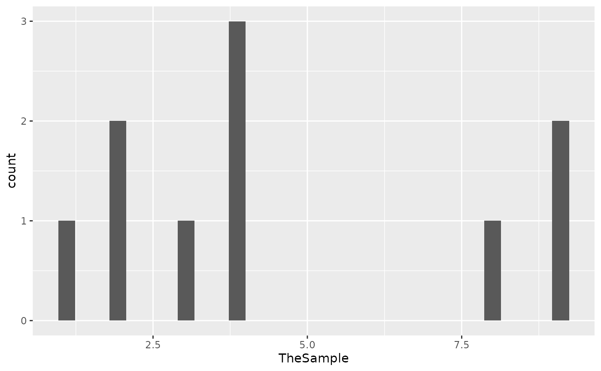
#> Sep02 19:04:46 test :plot total elpsd: 0.29 secs | 3 test plot 5
#> Sep02 19:04:46 test :plot `stat_bin()` using `bins = 30`. Pick better value with `binwidth`.
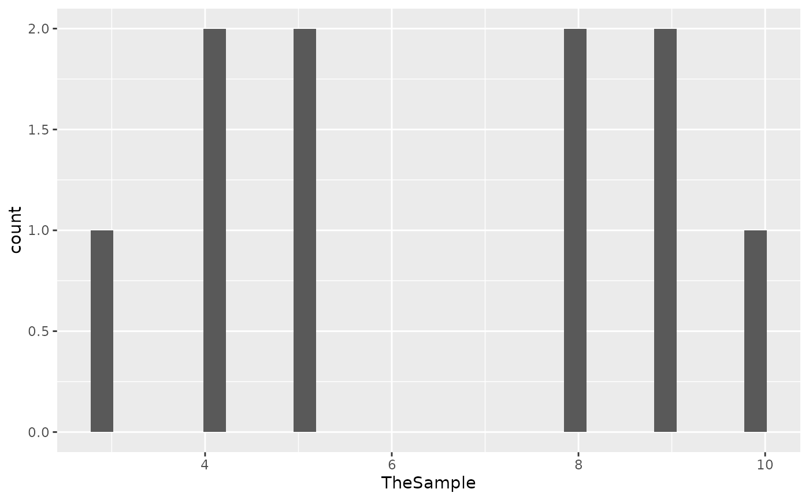
#> Sep02 19:04:46 test :plot total elpsd: 0.37 secs | 4 test plot 5
#> Sep02 19:04:46 test :plot `stat_bin()` using `bins = 30`. Pick better value with `binwidth`.
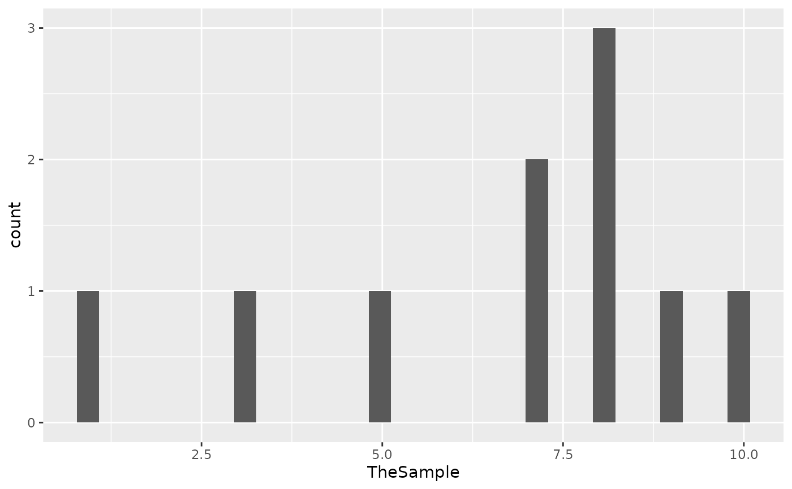
#> Sep02 19:04:47 test :plot total elpsd: 0.46 secs | 5 test plot 5
#> Sep02 19:04:47 test :plot `stat_bin()` using `bins = 30`. Pick better value with `binwidth`.
 #> Sep02 19:04:47 test :plot total elpsd: 0.56 secs | 6 test plot 5
#> Sep02 19:04:47 test :plot `stat_bin()` using `bins = 30`. Pick better value with `binwidth`.
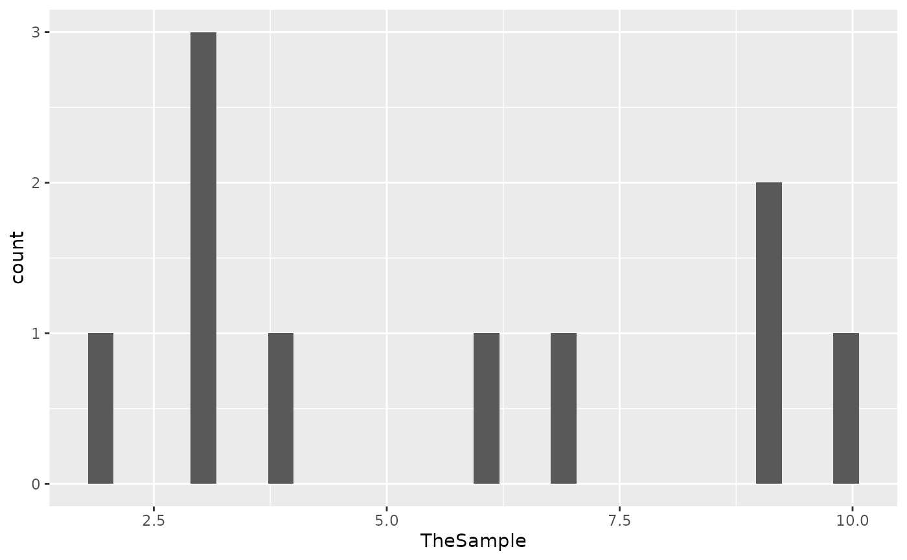
#> Sep02 19:04:47 test :plot total elpsd: 0.64 secs | 7 test plot 5
#> Sep02 19:04:47 test :plot `stat_bin()` using `bins = 30`. Pick better value with `binwidth`.
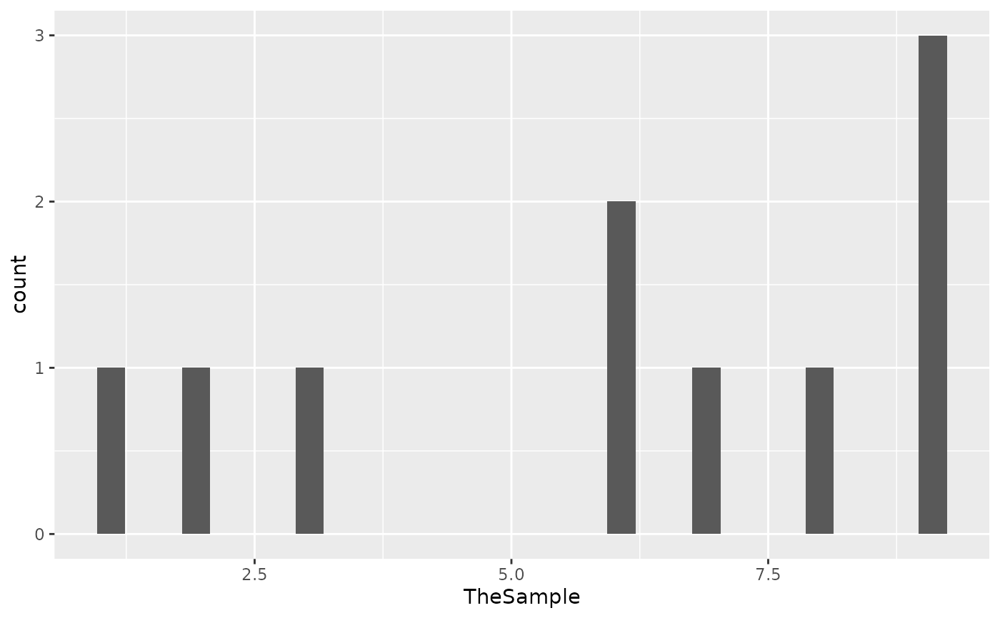
#> Sep02 19:04:47 test :plot total elpsd: 0.73 secs | 8 test plot 5
#> Sep02 19:04:47 test :plot `stat_bin()` using `bins = 30`. Pick better value with `binwidth`.
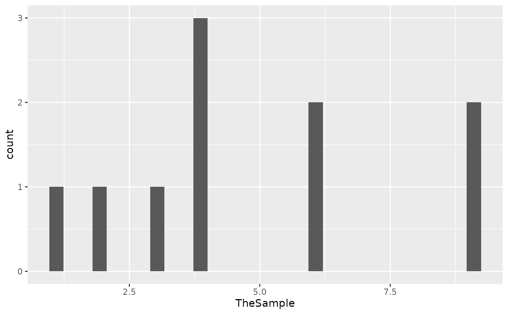
#> Sep02 19:04:47 test :plot total elpsd: 0.81 secs | 9 test plot 5
#> Sep02 19:04:47 test :plot `stat_bin()` using `bins = 30`. Pick better value with `binwidth`.
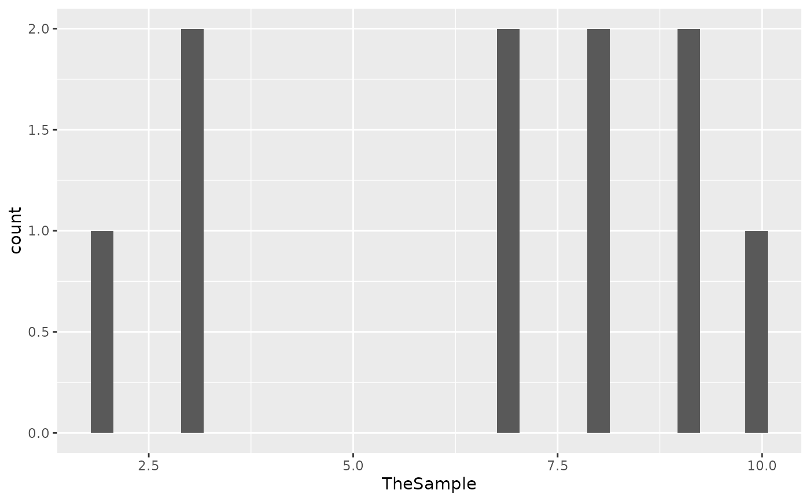
#> Sep02 19:04:47 test :plot total elpsd: 0.92 secs | 10 test plot 5
#> Sep02 19:04:47 test :plot `stat_bin()` using `bins = 30`. Pick better value with `binwidth`.
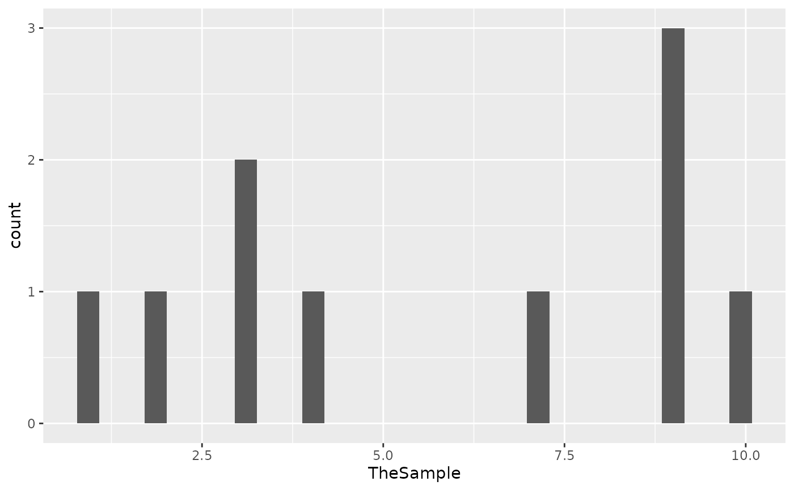
#> simList saved in
#> SpaDES.core:::savedSimEnv()$.sim
#> It will be deleted at next spades() call.
#> Sep02 19:04:47 test :plot total elpsd: 0.56 secs | 6 test plot 5
#> Sep02 19:04:47 test :plot `stat_bin()` using `bins = 30`. Pick better value with `binwidth`.
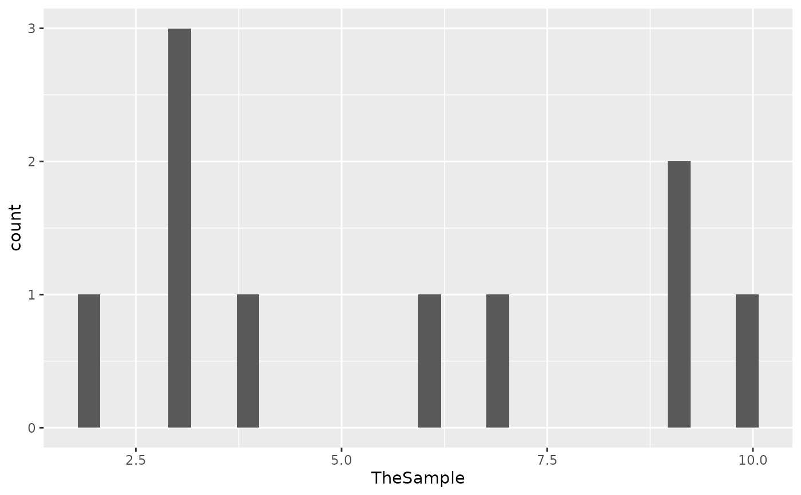
#> Sep02 19:04:47 test :plot total elpsd: 0.64 secs | 7 test plot 5
#> Sep02 19:04:47 test :plot `stat_bin()` using `bins = 30`. Pick better value with `binwidth`.
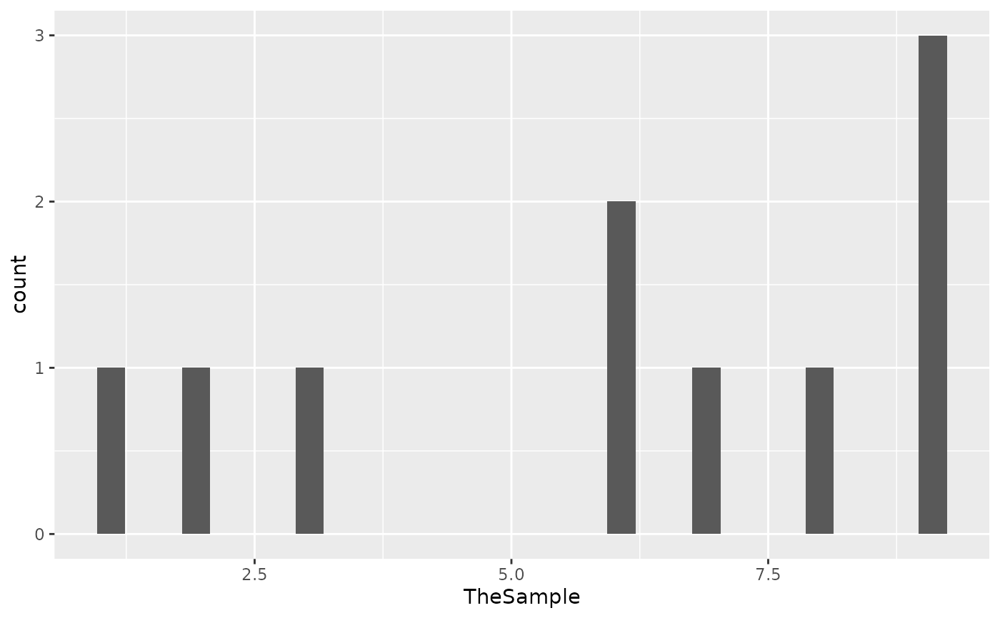
#> Sep02 19:04:47 test :plot total elpsd: 0.73 secs | 8 test plot 5
#> Sep02 19:04:47 test :plot `stat_bin()` using `bins = 30`. Pick better value with `binwidth`.
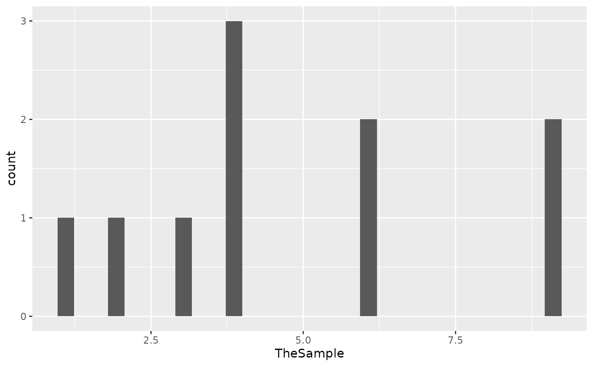
#> Sep02 19:04:47 test :plot total elpsd: 0.81 secs | 9 test plot 5
#> Sep02 19:04:47 test :plot `stat_bin()` using `bins = 30`. Pick better value with `binwidth`.
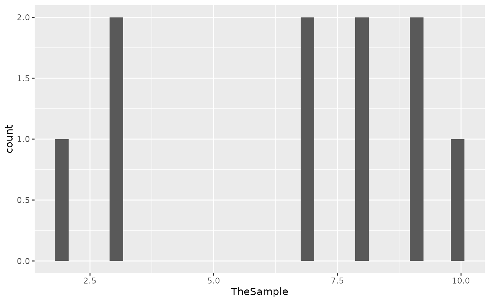
#> Sep02 19:04:47 test :plot total elpsd: 0.92 secs | 10 test plot 5
#> Sep02 19:04:47 test :plot `stat_bin()` using `bins = 30`. Pick better value with `binwidth`.
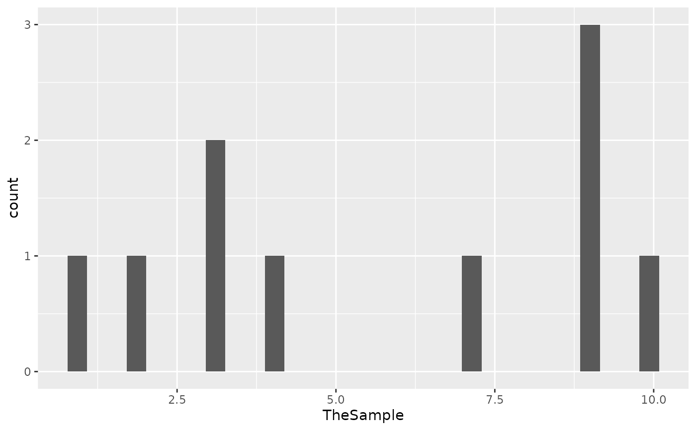
#> simList saved in
#> SpaDES.core:::savedSimEnv()$.sim
#> It will be deleted at next spades() call.